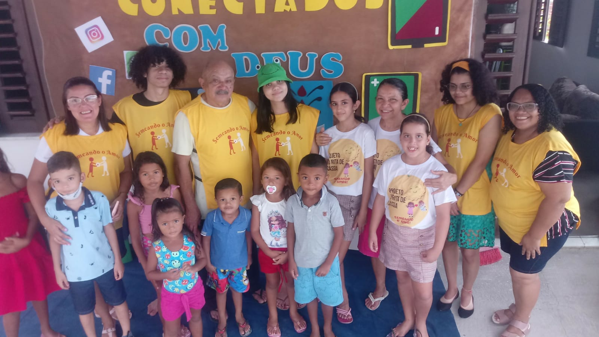
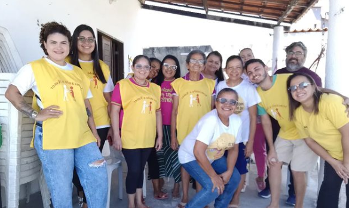

Projeto vó rita de cassia
.png )


O projeto "Vó Rita de Cássia" é uma iniciativa comunitária que visa auxiliar crianças carentes por meio do ensino religioso. Fundado pela dedicada voluntária Rita de Cássia, conhecida carinhosamente como Vó Rita, o projeto tem como objetivo proporcionar às crianças de comunidades carentes acesso a valores morais e espirituais por meio da educação religiosa.
Localizado em um bairro desfavorecido, o projeto oferece aulas semanais que abordam histórias bíblicas, princípios éticos e valores humanos universais, com o intuito de promover o desenvolvimento integral das crianças. Além das atividades religiosas, o projeto também oferece suporte educacional complementar, como reforço escolar e atividades extracurriculares.
A equipe do projeto é composta por voluntários dedicados, incluindo professores de religião, pedagogos, assistentes sociais e membros da comunidade local. Eles trabalham em estreita colaboração com as famílias das crianças atendidas, buscando promover um ambiente acolhedor e de apoio para o crescimento e desenvolvimento saudável de cada criança.
"Vó Rita de Cássia" é mais do que apenas um projeto educacional; é uma rede de apoio e esperança para crianças que enfrentam desafios em suas vidas. Através do amor, da educação e da fé, o projeto visa capacitar essas crianças a alcançarem seu pleno potencial e a construírem um futuro melhor para si mesmas e para suas comunidades.
Projeto vó rita de cassia
Projeto vó rita de cassia tem como objetivo atender crianças carentes ao redor do mundo, educação, religão e brincadeiras.O projeto "Vó Rita de Cássia" é uma iniciativa comunitária que visa auxiliar crianças carentes por meio do ensino religioso. Fundado pela dedicada voluntária Rita de Cássia, conhecida carinhosamente como Vó Rita, o projeto tem como objetivo proporcionar às crianças de comunidades carentes acesso a valores morais e espirituais por meio da educação religiosa.
Localizado em um bairro desfavorecido, o projeto oferece aulas semanais que abordam histórias bíblicas, princípios éticos e valores humanos universais, com o intuito de promover o desenvolvimento integral das crianças. Além das atividades religiosas, o projeto também oferece suporte educacional complementar, como reforço escolar e atividades extracurriculares.
A equipe do projeto é composta por voluntários dedicados, incluindo professores de religião, pedagogos, assistentes sociais e membros da comunidade local. Eles trabalham em estreita colaboração com as famílias das crianças atendidas, buscando promover um ambiente acolhedor e de apoio para o crescimento e desenvolvimento saudável de cada criança.
"Vó Rita de Cássia" é mais do que apenas um projeto educacional; é uma rede de apoio e esperança para crianças que enfrentam desafios em suas vidas. Através do amor, da educação e da fé, o projeto visa capacitar essas crianças a alcançarem seu pleno potencial e a construírem um futuro melhor para si mesmas e para suas comunidades.